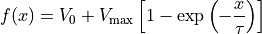
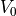

hyperspy._components.rc module
- class hyperspy._components.rc.RC(Vmax=1.0, V0=0.0, tau=1.0, module='numexpr', **kwargs)
Bases:
ExpressionRC function component (based on the time-domain capacitor voltage response of an RC-circuit)

Variable
Parameter
Vmax

V0

tau
- Parameters
Vmax (float) – maximum voltage, asymptote of the function for
V0 (float) – vertical offset
tau (float) – tau=RC is the RC circuit time constant (voltage rise time)
**kwargs – Extra keyword arguments are passed to the
Expressioncomponent.